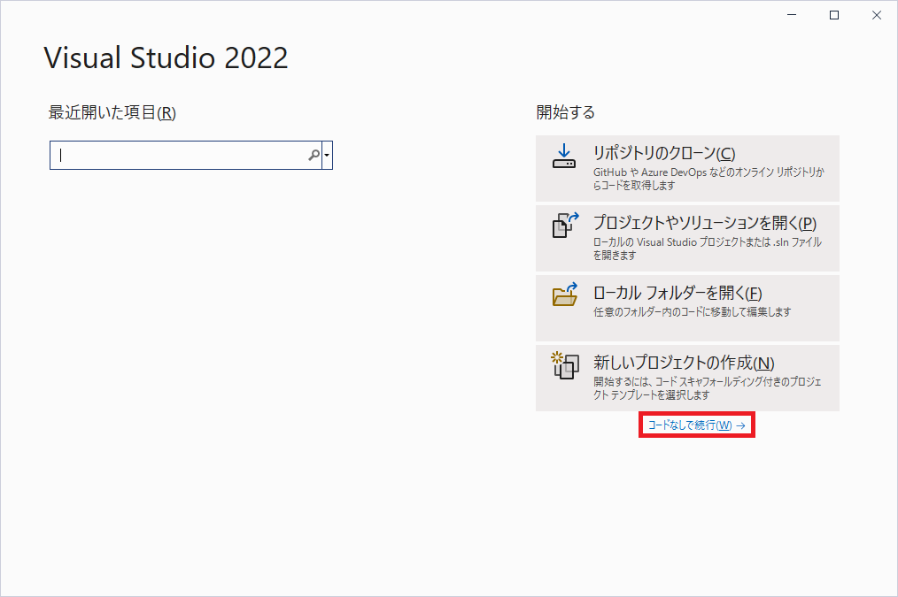

とりあえずプログラミングしてみる
プロジェクトの考え方まず、Visual Studioでプログラミングするため必要な考え方を確認します。ソースファイルをまとめたものを「プロジェクト」と呼びます。  プロジェクト単位でアプリケーションが作られます。 ソリューションの考え方プロジェクトをまとめたものを「ソリューション」と呼びます。ソリューションとプロジェクトの作成では、ソリューションとプロジェクトを作成しましょう。Visual Studioを起動して、この画面が表示されたら、「コードなしで続行(W)」を クリックします。  メインの画面が開いてきたら、 「ファイル(F)」→「新規作成(N)」→「プロジェクト(P)...」 の順番で選択・クリックします。  次の画面が表示されたら「空のソリューション」を探して選択し、「次へ(N)」を押します。 好きなソリューション名と場所を決めて、「作成(C)」を押します。 ここでは「CGettingStarted」というソリューション名で進めます。  これで「プロジェクトを持っていないソリューション」ができました。 このソリューションにプロジェクトを作成します。 先程と同様に、「ファイル(F)」→「新規作成(N)」→「プロジェクト(P)...」 の順番で選択・クリックします。 「空のプロジェクト」を選択して、「次へ(N)」を押します。 ※空のプロジェクトが複数ある場合は、「C++」「Windows」「コンソール」と書かれているものを選択します。  |
IT入門・研究室 | C言語入門
|
当Webサイトに記載されている内容は、筆者が独自に調査・研究した内容をまとめています。 そのため、記載されている内容によって、 いかなる損害が発生したとしても、筆者は責任を負いかねますのでご了承ください。 |